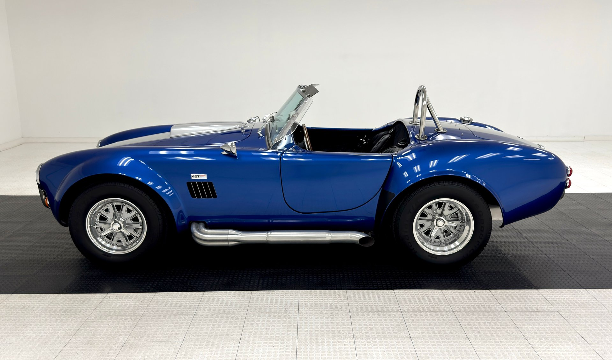
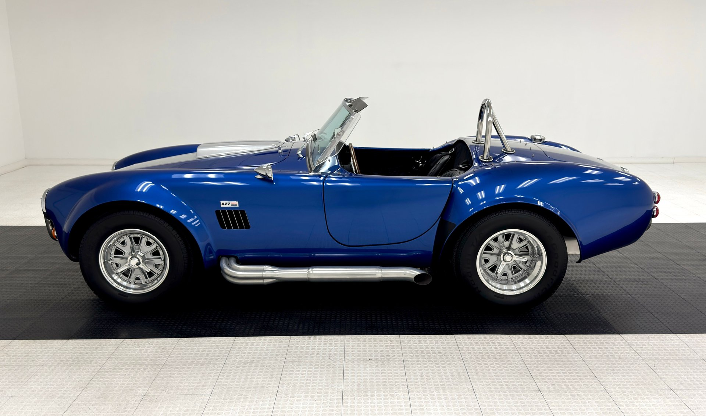

El Chevrolet suburban, conocido popularmente como Sting Ray, es un símbolo de innovación y poder en la industria automotriz americana. Su diseño elegante y aerodinámico y con líneas angulares, marcó un antes y un después en la estética de los deportivos. Este modelo ofrecía no solo un aspecto impresionante, sino también un rendimiento sobresaliente que lo convirtió en un favorito entre los entusiastas de la velocidad. El suburban es un auto que representa la combinación perfecta entre estilo, tecnología y potencia, consolidándose como un clásico atemporal.
Con un motor V8 de 5.4 litros que entregaba 300 caballos de fuerza, el Sting Ray podía alcanzar velocidades máximas de hasta 250 km/h. La transmisión manual de 4 velocidades y los frenos de disco delanteros mejoraban la experiencia de conducción, proporcionando control y seguridad. Su suspensión diseñada para el rendimiento deportivo permitía un manejo ágil y estable, ideal para quienes buscaban emociones fuertes al volante.